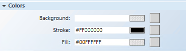

Creating a Multi-Parameter Button
The following instructions are just one example of how to draw a button and how to configure a command with multiple command parameters.
Scenario: You want to click a button from within a graphic to command, for example, a binary output data point, to the Active state and command the priority of the data point to 2.
- You have completed the steps in Preparing to Create Controls to Command Objects.
- You have reviewed Command and Navigation Properties and have a full understanding of the fields and the options available to you for configuring the command control.
- Click a drawing element and then draw a shape for the button, for example a circle, on the canvas.
- Select the button element (for example, circle) on the canvas, and from the Property View, expand the Colors property.
- The button element must have a color associated with the Background or Fill fields, so that it has a selectable area. If you leave both properties blank, the button cannot be selected.
- Format the button element using the following properties.

- Background: Type the name of a color for the background.
- Fill: Type the name of a color for the command control outline.
- Stroke: Type a name of a color for the command control characters.
- Select the element on the canvas, and from the Property View expand the Command and Navigation properties group.

- Drag a designated data point from System Browser into the Target field.
NOTE: If the target designation does not specify a property, the default property is targeted. Otherwise you must specify the property by typing a period (.) and then the property name after you dragging the data point into the Target field, for example:CCProject.LogicalView:Logical.PXRack.B.Block.Hcrv;.Property_Name - For this example, drag a binary output point and at the end of the property path, and type .Priority_Array.
NOTE: If the data point is selected in System Browser, or a symbol instance of the data point is selected on the canvas, the data point information is displayed in the Extended Operations tab. From the Extended Operations tab, drag the property you want to target into the Target field. The property name is added automatically. - From the Command Name drop-down menu, select or type the command rule that you want applied to the property. If you manually type the command name, it must match the name of the command in the Models & Functions Command Configuration section. This field is case-sensitive.
- For this example, type or select WritePrio.
- In the Parameter field, do one of the following:
- Select the values from the drop-down menu.
- Type and replace the existing values with the values the button will command to.
- For this example, type Value=1; Priority=2
NOTE: From the Trigger drop-down menu, select how to initiate the command: Single click or Double click. For this example, select Single Click. - (Optional) In the Description field, type a brief description of the command that will appear in the tooltip.
- From the Cursor drop-down menu, select the cursor preference select the cursor preference that you want to display when the command is active.
- Select the Command Trigger check box to enable the command control to initiate and send a command.
- To disable the command control, check the Disabled check box, and from the Disabled Style drop-down menu, select how the disabled command control displays when disabled. For example, if the selected data point is
Out_of_Serviceand the command is disabled, the disabled style will be active at runtime to reflect this. - The Extended Tooltip check box is selected by default. It displays the following command object detail fileds: Target, Command Name, and Parameter. The extended tooltip is added to any existing tooltips configured for the element.
- Click Save As
 .
.